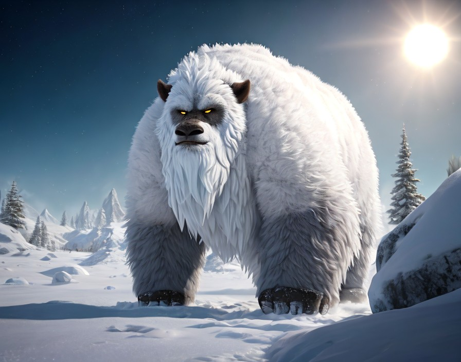

Description: These massive, fur-covered creatures roam the frozen wastelands of Eclipta in search of prey. They are apex predators, relying on their keen senses and brute strength to hunt. Frostbound Yetis can live for up to 50 Earth years.","Eclipta",7,"4_fauna_frostboundYeti.png"
5,"Vorgrak Beetle","Vorgrak Beetles are nocturnal hunters, preying on smaller insects and scavenging plant matter. They communicate through clicks and chirps, often forming intricate patterns of light to attract mates. They are found deep within the dense jungles of Chalupax, particularly near sources of water where vegetation is abundant. They are omnivorous, feeding on both plant matter and smaller creatures. They are preyed upon by larger predators such as the Shadowfang Serpent. They live approximately 10-15 standard Chalupaxian years.
Planet: Chalupax